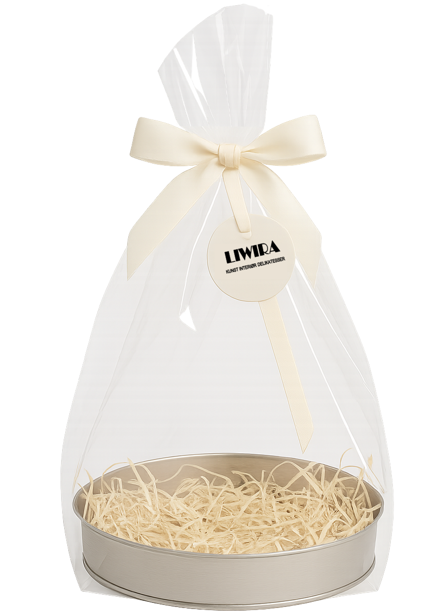
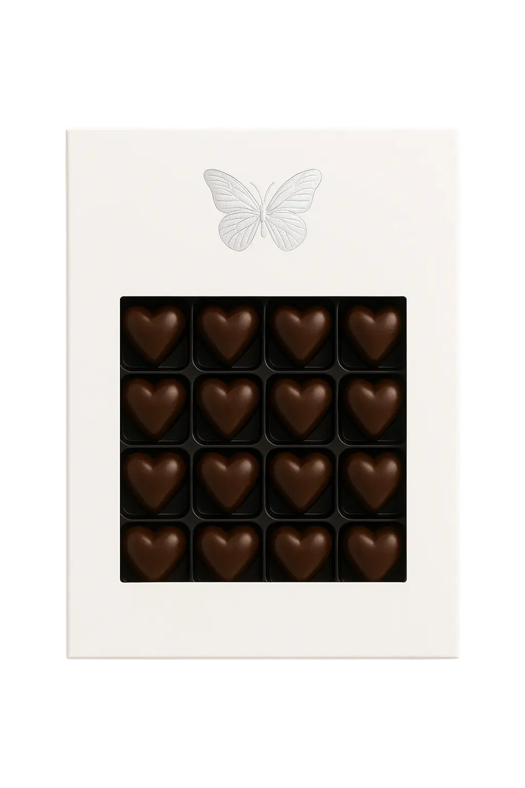
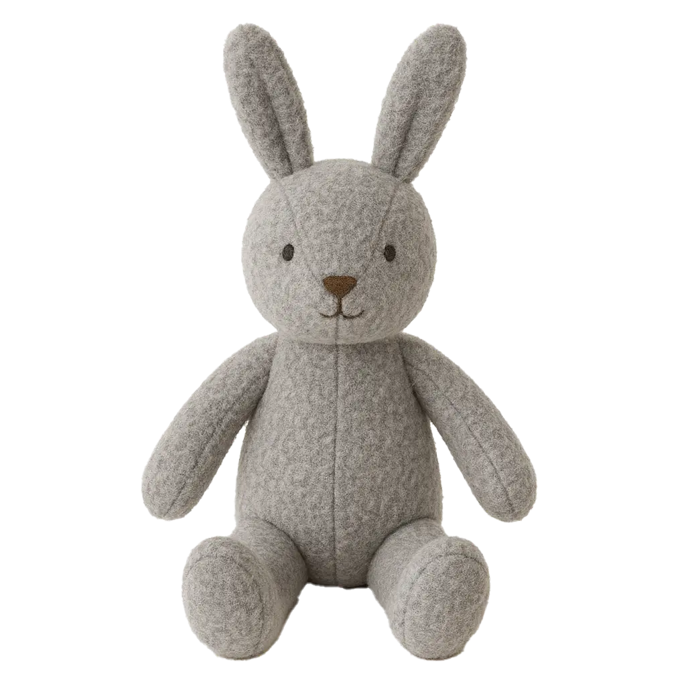
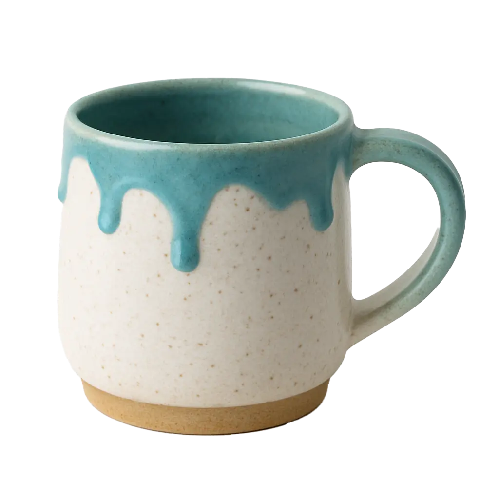
LAV DIN EGEN GAVEKURV
Klik de ting i kurven, du gerne vil give - og se med det samme, hvordan gavekurven tager form.
Du kan altid ændre indholdet undervejs. Når du er tilfreds, pakker vi den ind, gør den klar til afhentning eller sender den afsted.
DINE VALG
Pris i alt: 0 kr.
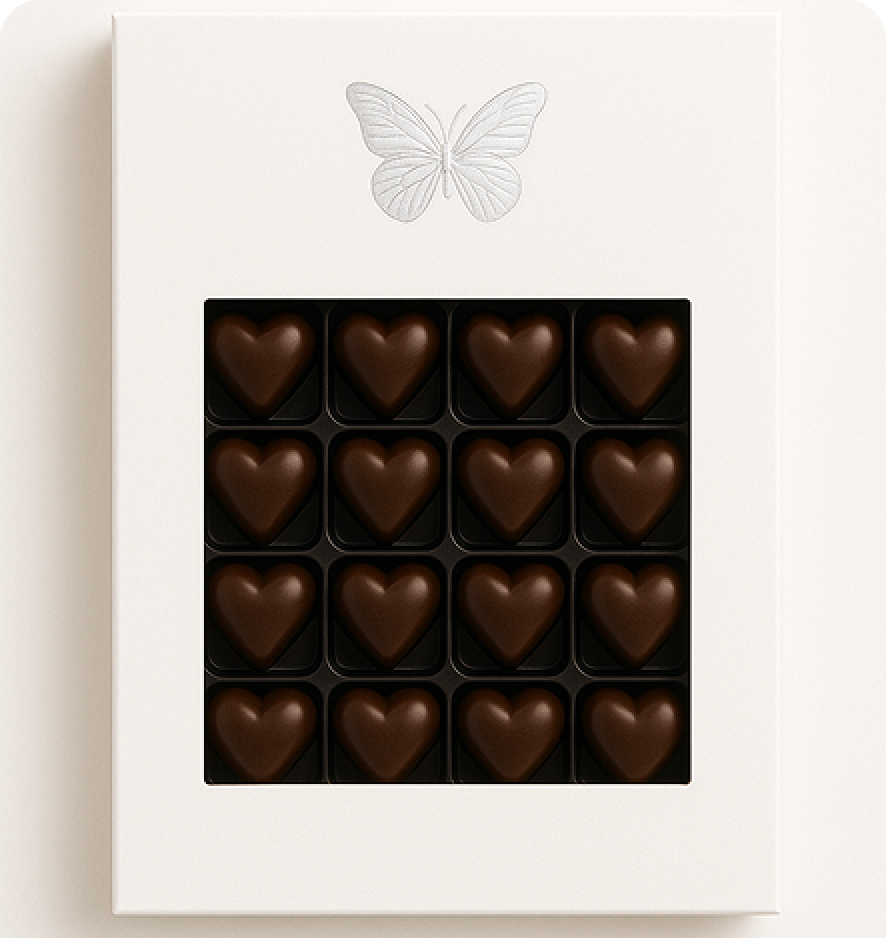
16 håndlavede mørke chokoladehjerter med silkeblødt fyld af jordbær,
hindbær og cremet nougat.
16 håndlavede mørke chokoladehjerter med silkeblødt fyld af jordbær,
hindbær og cremet nougat.
Fremstillet af nøje udvalgte råvarer for en intens,
ren smagsoplevelse
– sprød chokoladeskal udenpå, blød kerne indeni.
Fyldte chokoladerhjerter
112 kr.
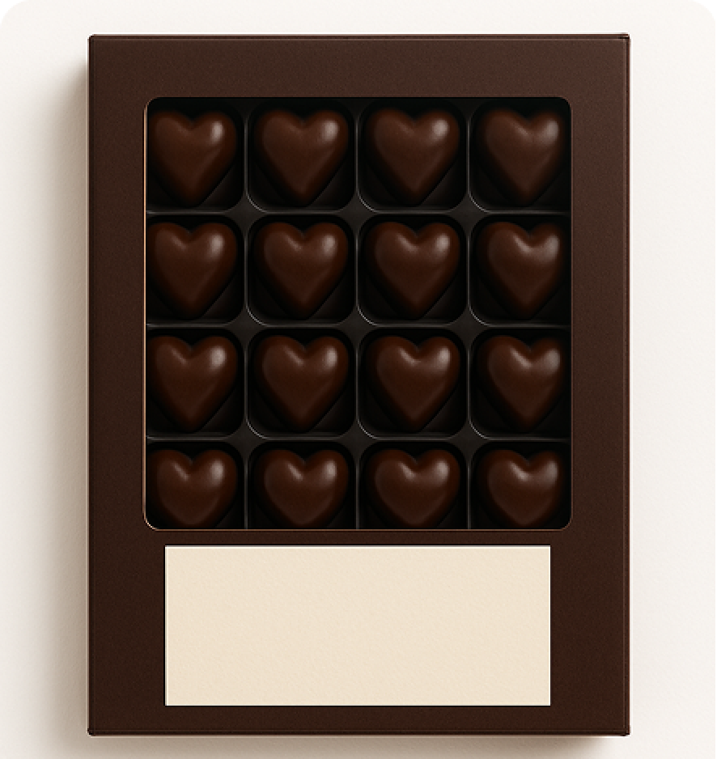
16 hjerteformede bidder med en sprød skal af mørk kvalitetschokolade og fyld af cremet nougat, ristede hasselnødder og blød karamel.
16 hjerteformede bidder med en sprød skal af mørk kvalitetschokolade og fyld af cremet nougat, ristede hasselnødder og blød karamel.
Fremstillet af nøje udvalgte råvarer med fokus på en intens og ren smagsoplevelse.
Sprød chokoladeskal udenpå, blød kerne indeni.
Mørke fyldte chokoladehjerter
112 kr.
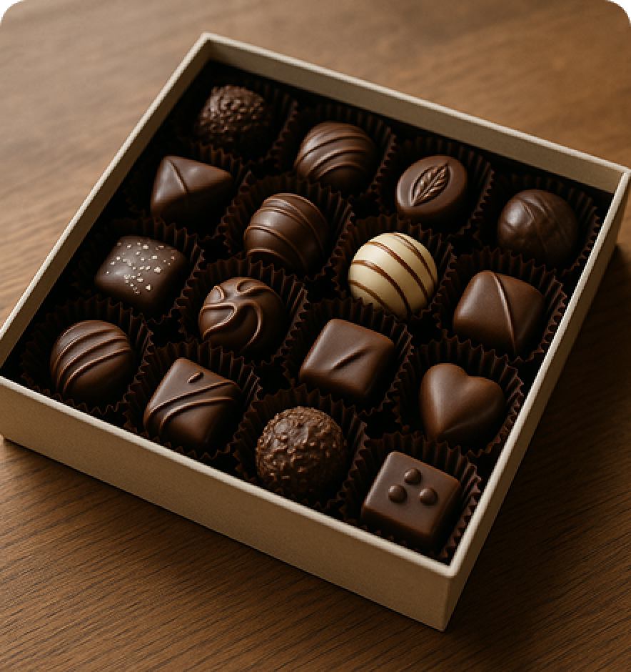
En eksklusiv æske med 20 varierende stykker fyldt chokolade –
En eksklusiv æske med 20 varierende stykker fyldt chokolade –
hver med sin helt egen smag og karakter.
Oplev alt fra intens mørk ganache og cremet karamel til sprød nougat og ristede nøddefyld.
Hver bid er fremstillet med nøje udvalgte råvarer og fokuseret på at levere en fyldig, ren og uforglemmelig smagsoplevelse.
20 Unikke Chokolader
148 kr.
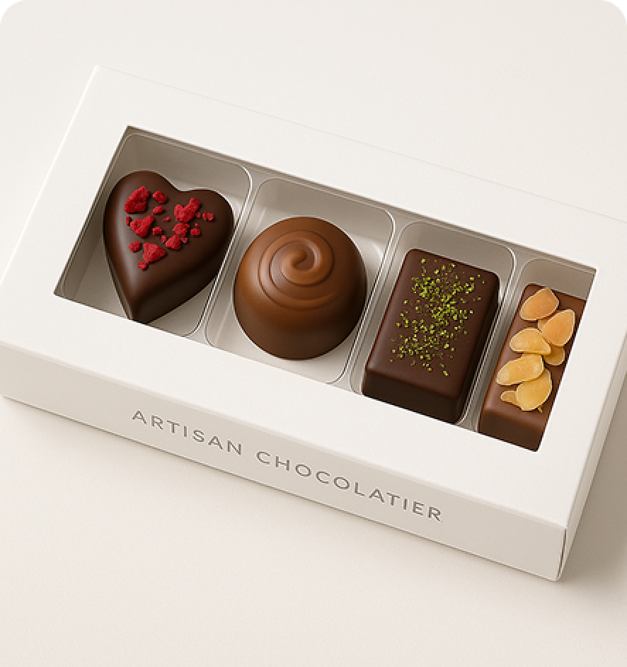
Oplev fire unikke smagsnuancer i ét elegant udvalg:
Oplev fire unikke smagsnuancer i ét elegant udvalg:
Jordbærhjertet med friskt, frugtrigt fyld
Saltkaramelswirlen med blød, let saltet karamel
Pistachefirkanten med cremet pistachecrème
Hasselnøddestjernen med rig, nøddeblød hasselnøddecréme
Fremstillet af førsteklasses råvarer med fokus på perfekt balance mellem kraftig chokolade og silkeblødt fyld.
Fire fyldte chokolader
58 kr.
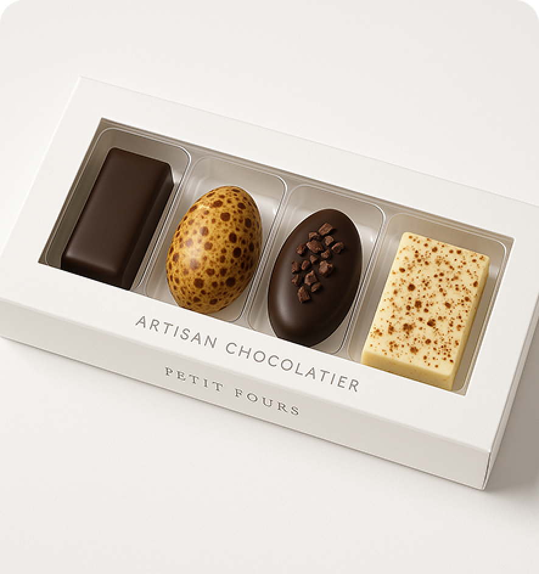
Oplev fire unikke smagsnuancer i ét elegant udvalg:
Oplev fire unikke smagsnuancer i ét elegant udvalg:
Rektangulær bid med intens, fløjlsblød ganache af 70 % mørk kvalitetschokolade.
Mønsterpræget oval med syrlig, frisk passionsfrugt-ganache og sprød chokoladeskal.
Mørk oval med aromatisk espresso-ganache, toppet med knasende kakaonibs.
Hvid, specklet firkant fyldt med silkeblød vaniljecréme og delikat hvid chokolade.
Fremstillet af førsteklasses råvarer med fokus på perfekt balance mellem kraftig chokolade og silkeblødt fyld.
Fire Fyldkombinationer
58 kr.
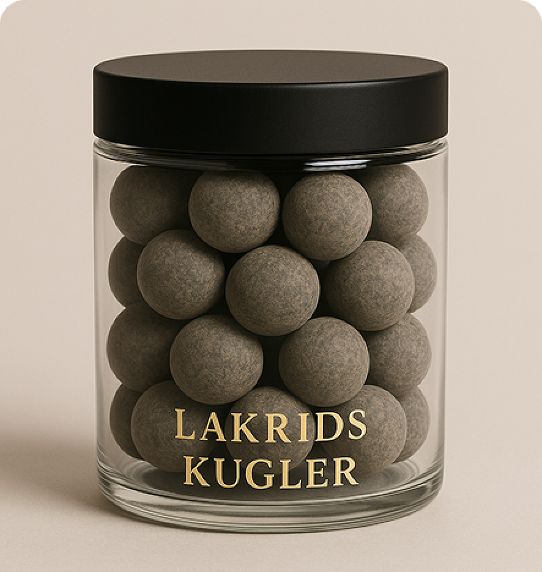
Runde, håndrullede lakridskugler med en let sprød sukkerbelægning omkring en blød,
intens lakridskerne.
Runde, håndrullede lakridskugler med en let sprød sukkerbelægning omkring en blød,
intens lakridskerne.
Fremstillet på finlakrids af høj kvalitet for en ren og kraftfuld smagsoplevelse.
Chokoladeovertrukket Lakrids
65 kr.
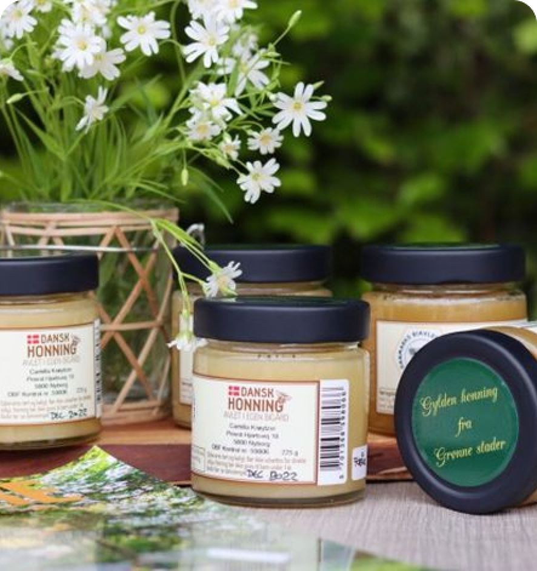
250 g gylden honning, nøje indsamlet fra danske enge og skovbryn.
250 g gylden honning, nøje indsamlet fra danske enge og skovbryn.
Ufiltreret og koldslået for at bevare alle naturlige enzymer og aromaer, byder den på en blød, blomsteragtig sødme med lette noter af lyng og vilde urter
– perfekt til te, bagværk eller som et sundt twist på morgenmaden.
Dansk honning
59 kr.
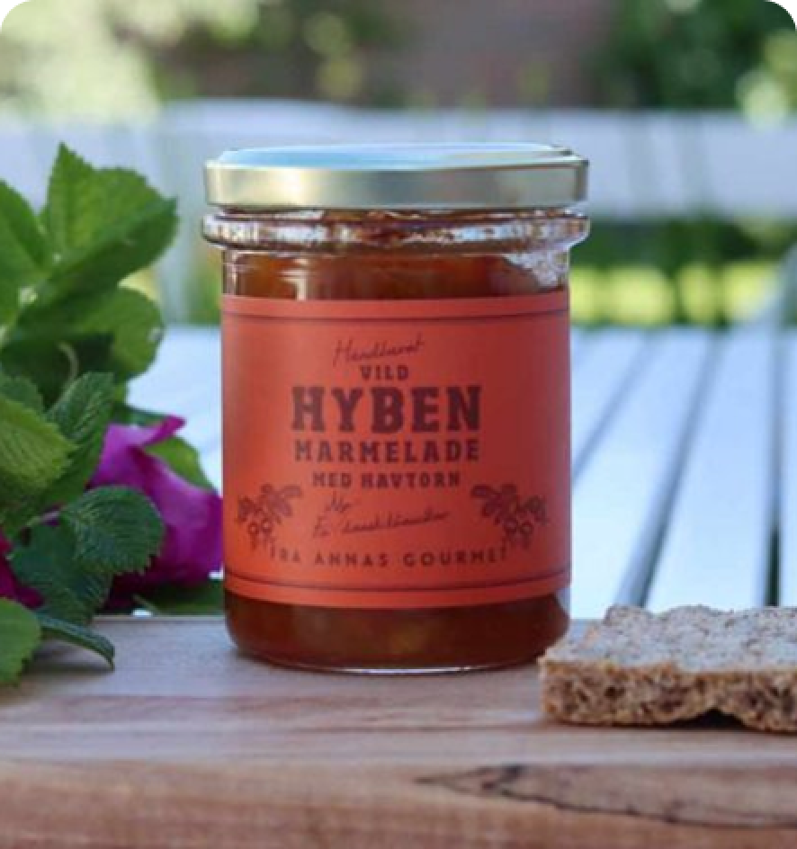
Fyldig marmelade af håndplukkede vilde hyben og syrlige havtorn,
Fyldig marmelade af håndplukkede vilde hyben og syrlige havtorn,
kogt med dansk sukker og et skvæt frisk citronsaft.
Resultatet er en smuk, gylden marmelade med en perfekt balance mellem hybnens bløde sødme og havtornens friske,let syrlige kant
– ideel på nybagt brød, til ostebordet eller som en smagsfuld topping på yoghurt.
Håndlavet - HYBEN MARMELADE
45 kr.
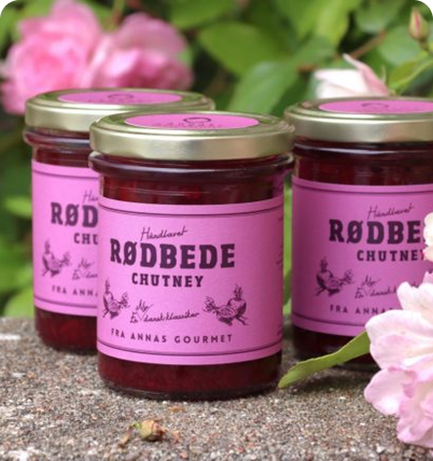
Håndlavet chutney med møre, danske rødbeder kogt med æbleeddike, rødløg, brun farin og en skarp note af sennepsfrø.
Håndlavet chutney med møre, danske rødbeder kogt med æbleeddike, rødløg, brun farin og en skarp note af sennepsfrø.
Resultatet er en dybrød, smagsfuld relish, der løfter alt fra ostebordet og grillede grøntsager til sandwich og stegt kylling.
Håndlavet - RØDBEDE CHUTNEY
45 kr.
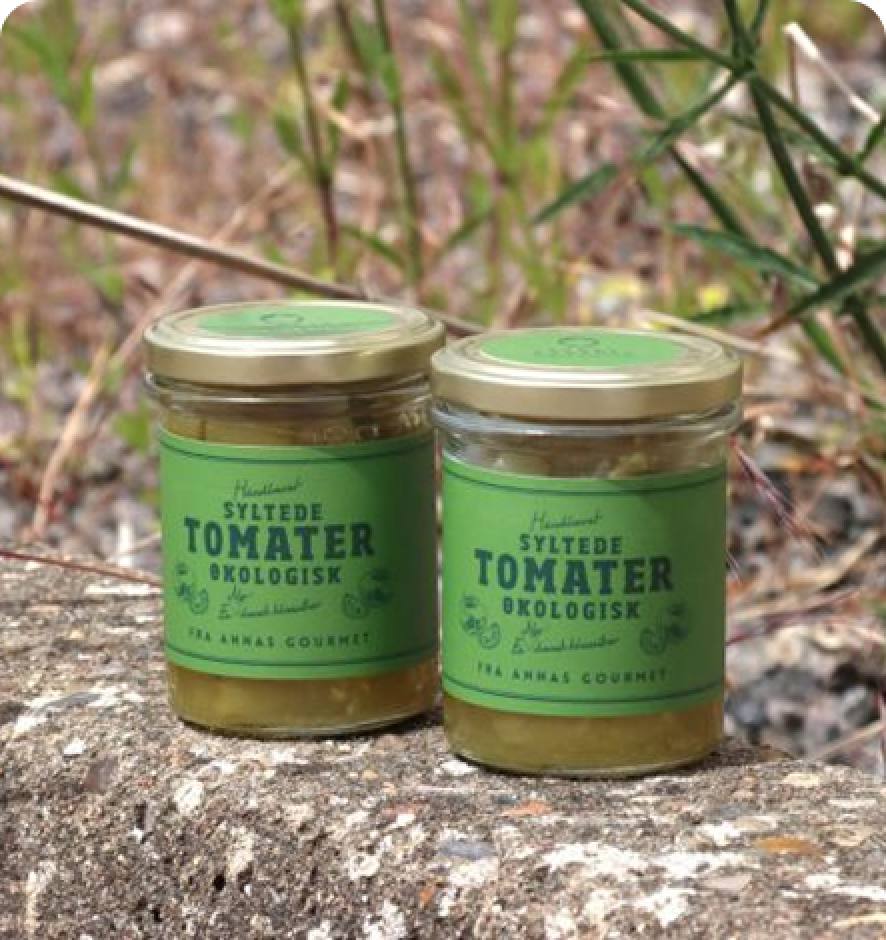
Håndplukkede, økologiske tomater marineret i mild æbleeddike tilsat aromatiske urter som timian og laurbær, en anelse rørsukker og et strejf hvidløg.
Håndplukkede, økologiske tomater marineret i mild æbleeddike tilsat aromatiske urter som timian og laurbær, en anelse rørsukker og et strejf hvidløg.
Resultatet er en sprød, syrlig-sød smagsoplevelse med masser af naturlig tomatsmag
– perfekt til salater, tapas eller som tilbehør til ost og kød.
Håndlavet - SYLTEDE TOMATER
45 kr.
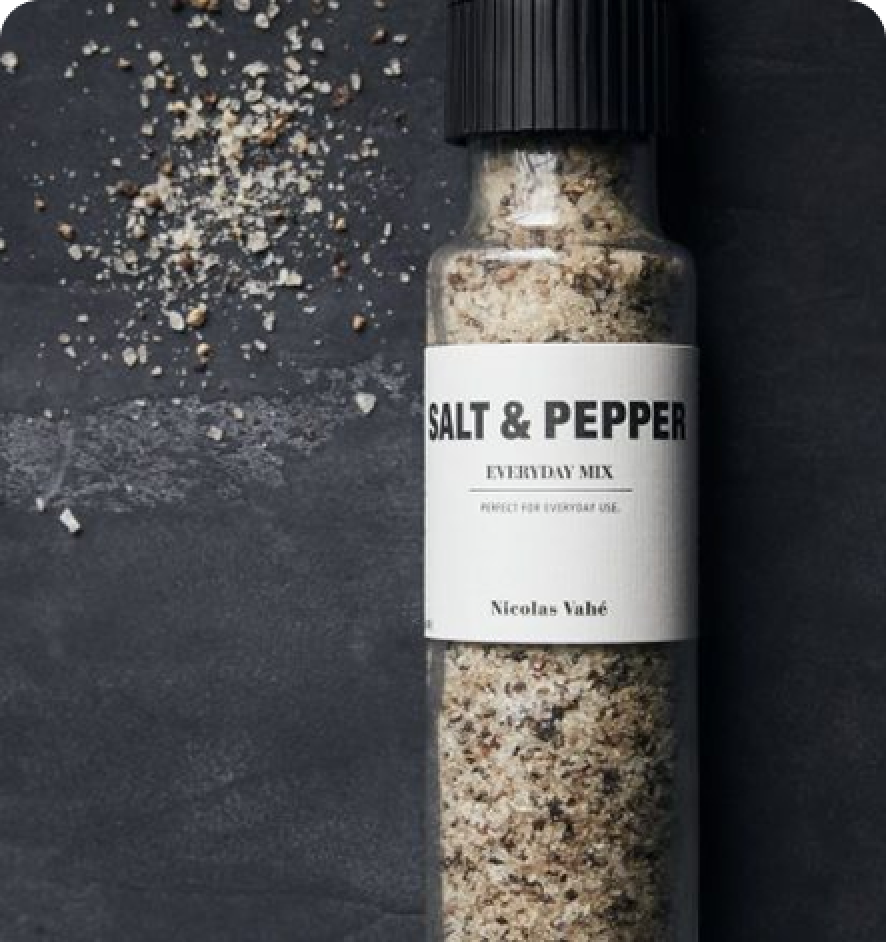
En harmonisk blanding af krystalklart havsalt, sorte peberkorn og en smule hvid peber, perfekt afstemt til daglig brug.
En harmonisk blanding af krystalklart havsalt, sorte peberkorn og en smule hvid peber, perfekt afstemt til daglig brug.
Fyldig smag og friskkværnede krydderier i ét praktisk mᴏʀᴛᴇʀ-design, der løfter alt fra salater og grøntsager til kød og suppe.
Nicolas Vahé - SALT & PEPPER
75 kr.
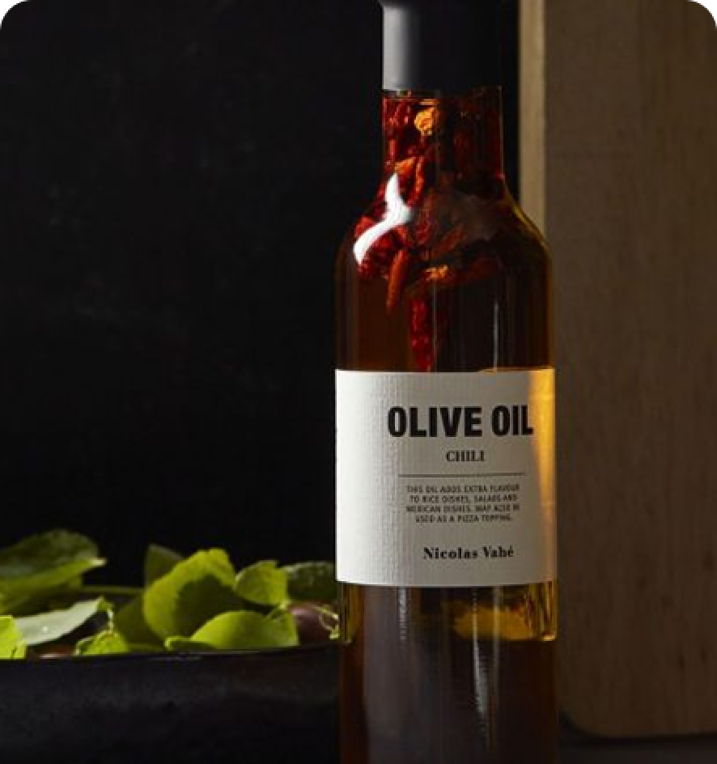
En fyldig, ekstra jomfruolivenolie nænsomt infunderet med rød chili, der giver en behagelig varme uden at overdøve olievnen.
En fyldig, ekstra jomfruolivenolie nænsomt infunderet med rød chili, der giver en behagelig varme uden at overdøve olievnen.
Perfekt til at dryppe over pizza, pasta eller grillede grøntsager for et krydret løft.
Nicolas Vahé - OLIVE OIL
119 kr.
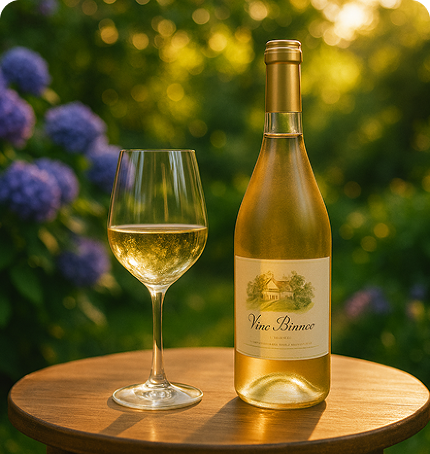
En lys, strågul hvidvin med delikate aromaer af grønne æbler, citrus og hvide blomster.
En lys, strågul hvidvin med delikate aromaer af grønne æbler, citrus og hvide blomster.
Smagen byder på en frisk syrebalance, let mineralitet og et strejf af moden pære, der afrundes med en fin, tør eftersmag.
Perfekt til fisk, skaldyr eller som aperitif på en solskinsdag.
Frisk Hvidvin
159 kr.
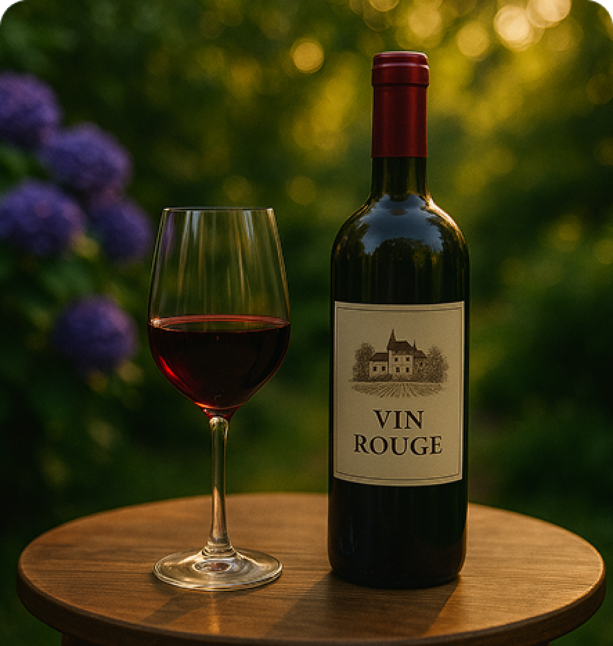
En intens, rubinrød vin med delikate noter af sorte kirsebær, modne blommer og et strejf af tørrede krydderurter.
En intens, rubinrød vin med delikate noter af sorte kirsebær, modne blommer og et strejf af tørrede krydderurter.
Smagen er rund og fyldig med bløde tanniner, let vanilje fra fadlagring og en lang, varm eftersmag.
Perfekt til kraftige retter som grillet oksekød, vildt eller et solidt ostebord.
Rig og Fyldig Rødvin
179 kr.
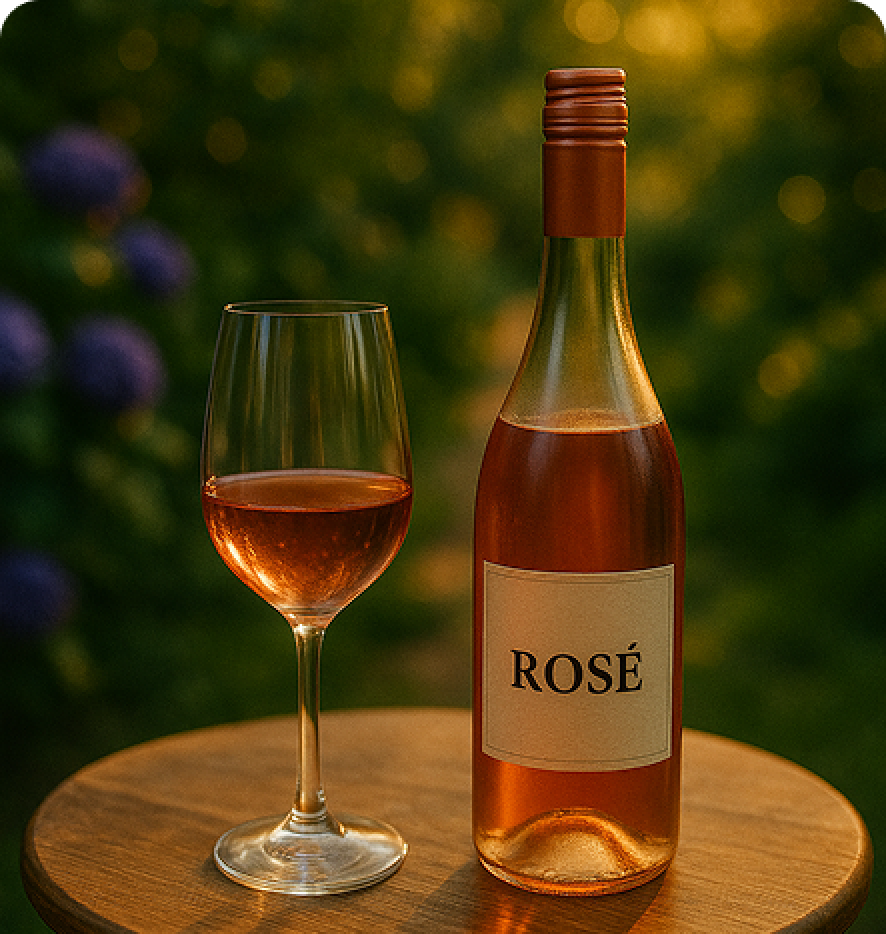
Lys lakserød farve med indbydende aromaer af sommerbær
Lys lakserød farve med indbydende aromaer af sommerbær
– jordbær, hindbær og kirsebær – flankeret af et strejf af citrus og hvide blomster.
Tør og let sprød på tungen med en ren, forfriskende syre og en blid, frugtagtig eftersmag.
Frisk & Frugtrig Rosé
169 kr.
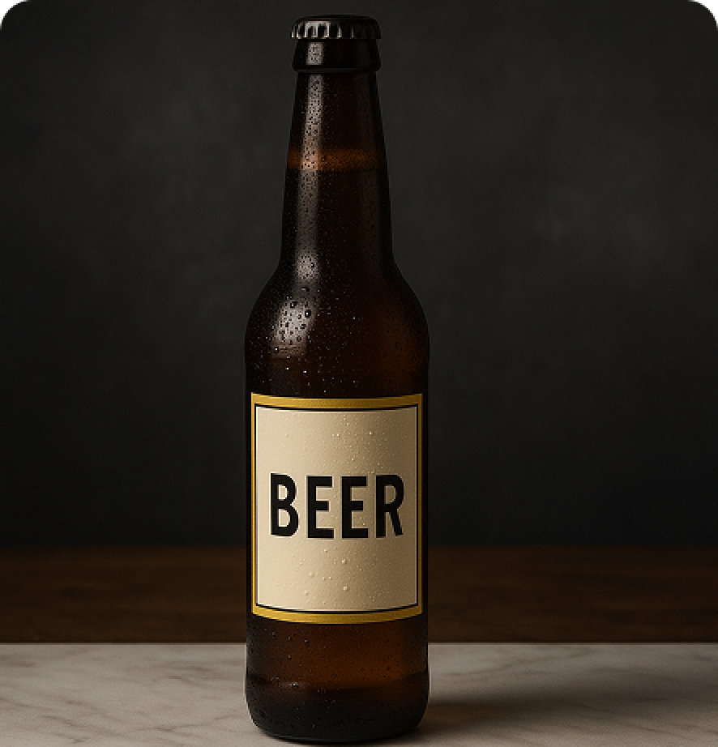
En gylden, let uklar øl med aromaer af citrus, urter og en diskret maltkarakter.
En gylden, let uklar øl med aromaer af citrus, urter og en diskret maltkarakter.
Smagsprofilen byder på en frisk, balanceret bitterhed fra de fineste humletyper, en mild krop og en tør, opkvikkende finish.
Perfekt som tørsteslukker på en lun dag.
Fyldte chokoladerhjerter
59 kr.
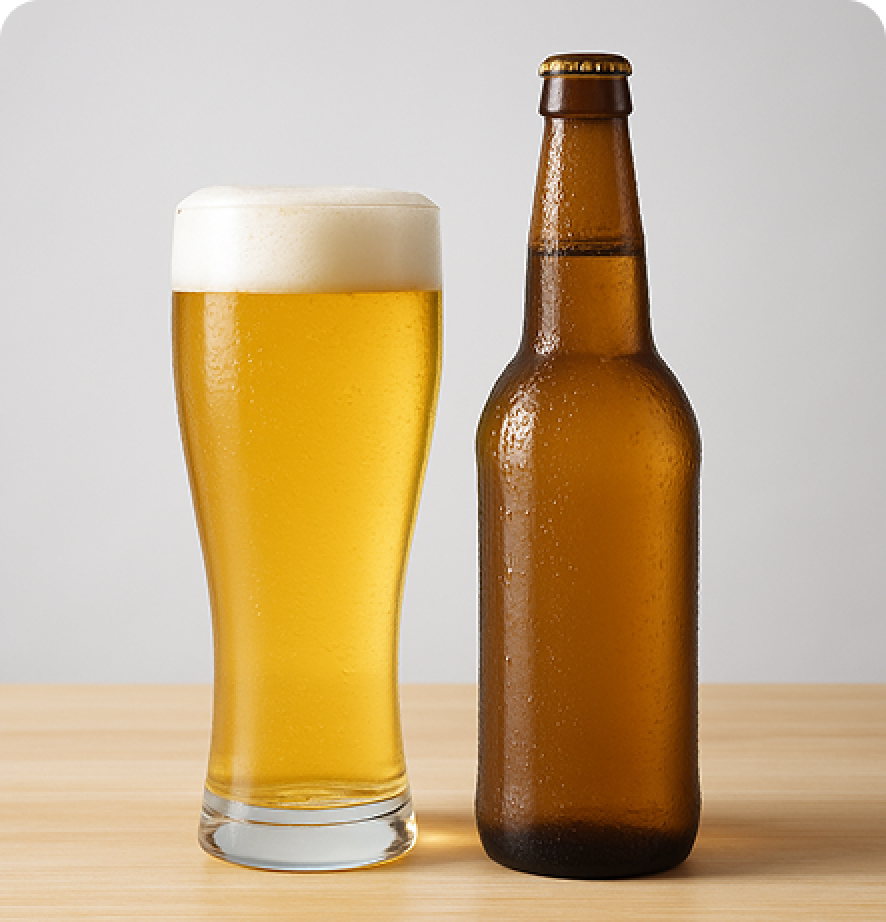
En klar, gylden pilsner med en frisk, maltaktig aroma og en finblomstret humleprofil.
En klar, gylden pilsner med en frisk, maltaktig aroma og en finblomstret humleprofil.
Skummet lægger sig blødt og vedvarende, mens smagen balancerer let sød malt med en ren, sprød bitterhed i eftersmagen.
Perfekt afkølende og tørstslukkende til enhver lejlighed.
Gylden Pilsner
49 kr.
En gylden, let uklar øl med aromaer af citrus, urter og en diskret maltkarakter.
Smagsprofilen byder på en frisk, balanceret bitterhed fra de fineste humletyper, en mild krop og en tør, opkvikkende finish.
Perfekt som tørsteslukker på en lun dag.
Fyldte chokoladerhjerter
59 kr.
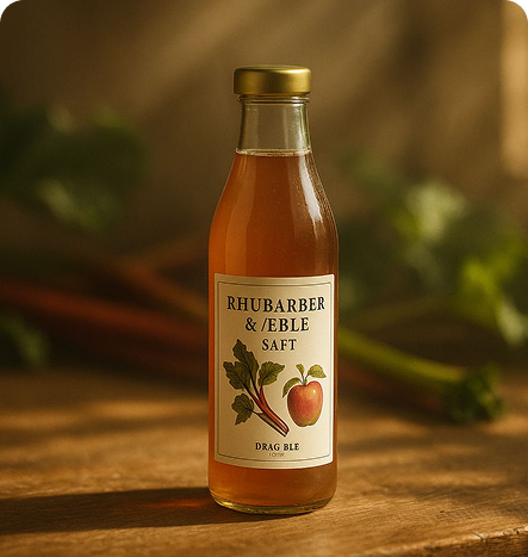
En frisk, naturklar saft koldpresset af danske rabarber og søde, sprøde æbler.
En frisk, naturklar saft koldpresset af danske rabarber og søde, sprøde æbler.
Den fine balance mellem rabarberens let syrlige bid og æblenes bløde sødme giver en livlig, frugtig smagsoplevelse
– perfekt fortyndet med iskoldt vand, som saftig ingrediens i cocktails eller frossen til ispinde.
Rabarber & Æble Saft
49 kr.
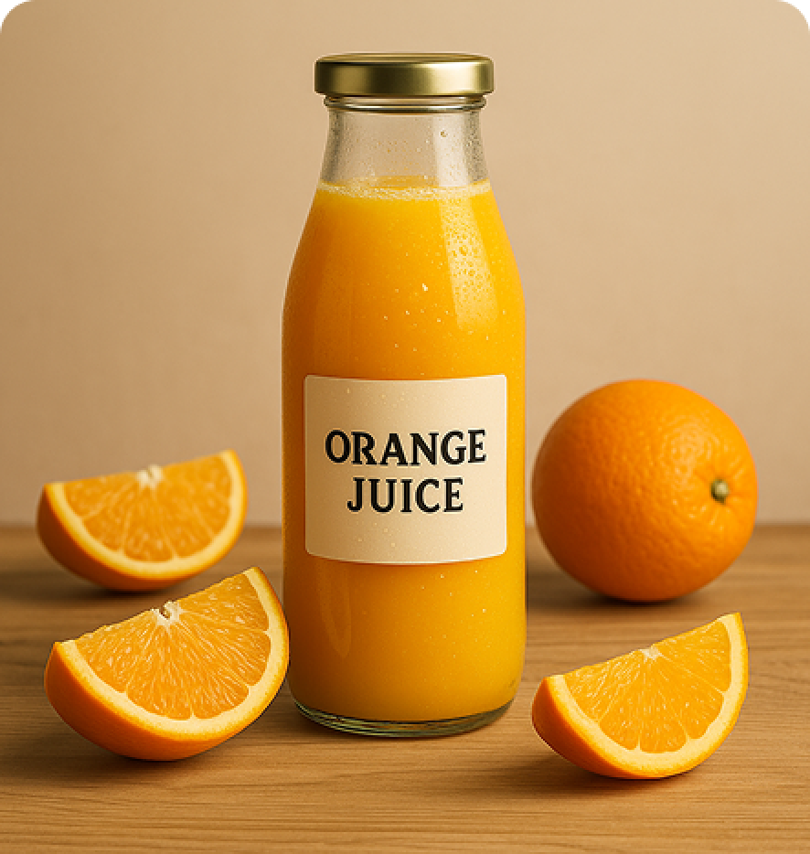
250 ml koldpresset juice fra solmodne, saftige appelsiner.
250 ml koldpresset juice fra solmodne, saftige appelsiner.
Naturligt sød og syrlig med fyldig citruskarakter og let pulp for autentisk mundfornemmelse.
Perfekt til morgenbordet, som forfriskende drik eller i smoothies.
Friskpresset Appelsinjuice
49 kr.
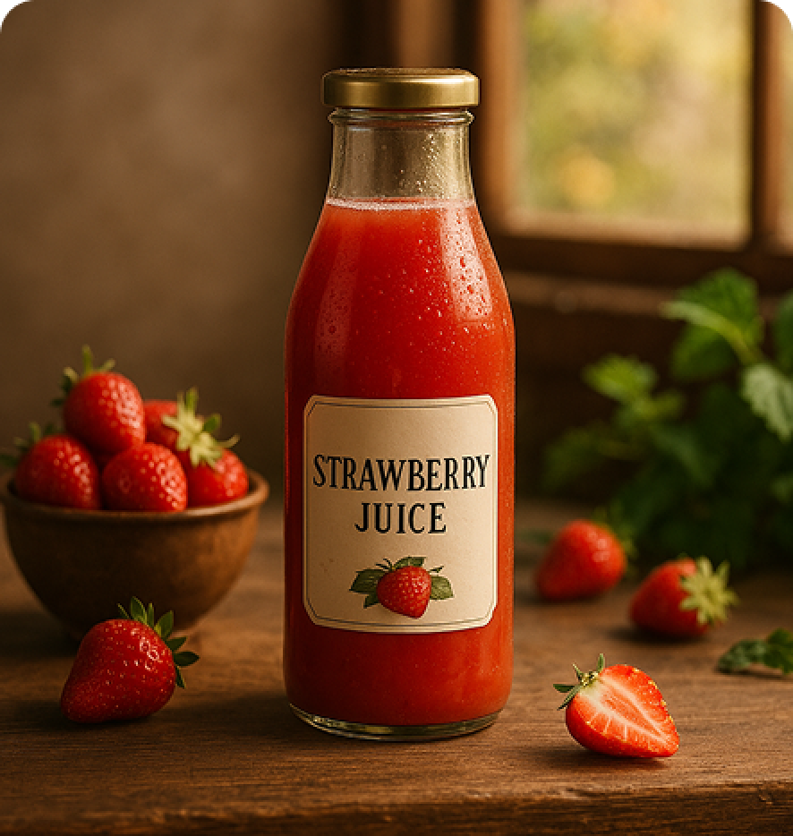
250 ml koncentreret saft lavet på solmodne, danske jordbær.
250 ml koncentreret saft lavet på solmodne, danske jordbær.
Den naturlige sødme og let syrlige kant gør den perfekt at fortynde med iskoldt vand eller danskvand for en frisk, hjemmelavet drik.
Kan også bruges som smagsgiver i cocktails, desserter eller over is.
Jordbærsaft
49 kr.
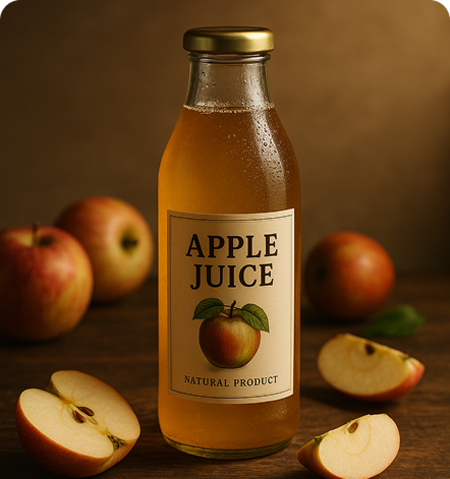
250 ml koldpresset juice fra nøje udvalgte, saftige æbler.
250 ml koldpresset juice fra nøje udvalgte, saftige æbler.
Naturlig, frugtagtig sødme med en blød, fyldig krop og let frisk syre
– server iskold som forfriskning til morgenbordet eller som en ren, naturlig smagsoplevelse gennem dagen.
Friskpresset Æblejuice
49 kr.
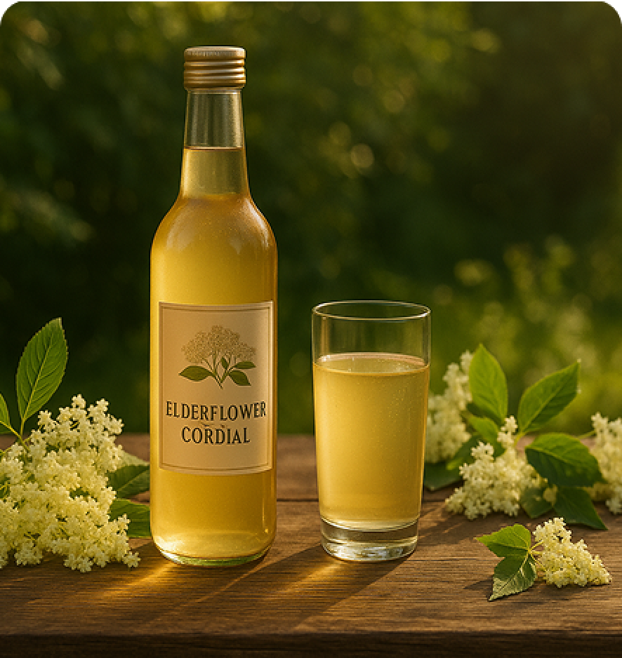
koncentreret saft kogt af nyplukkede danske hyldeblomster og rørsukker.
koncentreret saft kogt af nyplukkede danske hyldeblomster og rørsukker.
Den delikate blomsteraroma møder en let citrusagtig friskhed, der gør den perfekt at fortynde med iskoldt vand eller danskvand til en forfriskende sommerdrik.
Brug også som smagsgiver i cocktails eller over frugt og desserter.
Hyldeblomstsaft
49 kr.
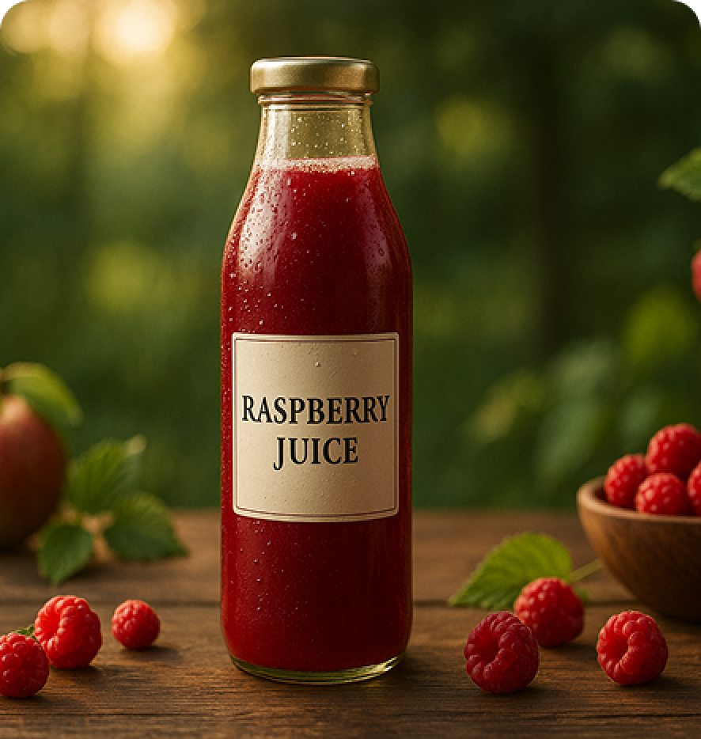
250 ml koncentreret saft lavet på solmodne, danske hindbær.
250 ml koncentreret saft lavet på solmodne, danske hindbær.
Den dybe, intense bærsmag kombineret med en let syrlighed gør den ideel at fortynde med iskoldt vand eller danskvand til en forfriskende drik.
Brug også som smagsgiver i cocktails, desserter eller over is for et frisk bærkick.
Hindbærsaft
49 kr.
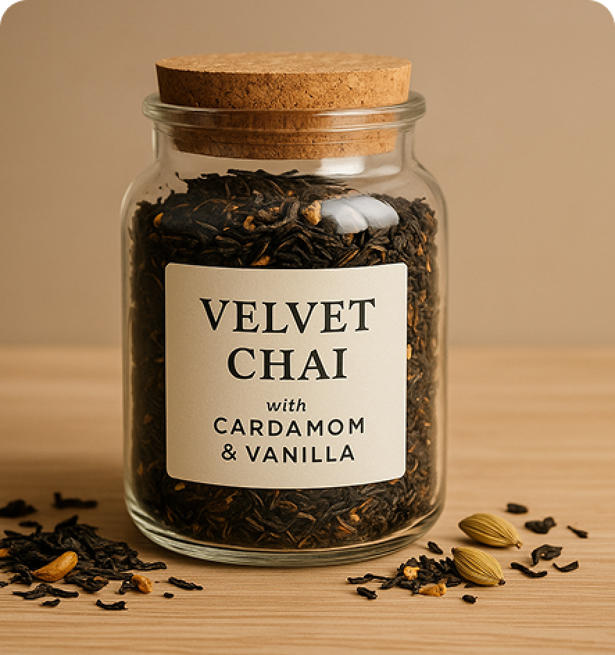
En luksuriøs chai-blanding baseret på fyldig, sort te, nænsomt krydret med aromatisk kardemomme og rund vanilje.
En luksuriøs chai-blanding baseret på fyldig, sort te, nænsomt krydret med aromatisk kardemomme og rund vanilje.
Skab en silkeblød, varm drik ved at lade 2 tsk. trække i 200 ml varmt vand i 5–7 minutter.
Nyd den som klassisk sort chai eller tilsæt mælk og honning for ekstra cremethed.
Velvet Chai med Kardemomme & Vanilje
99 kr.
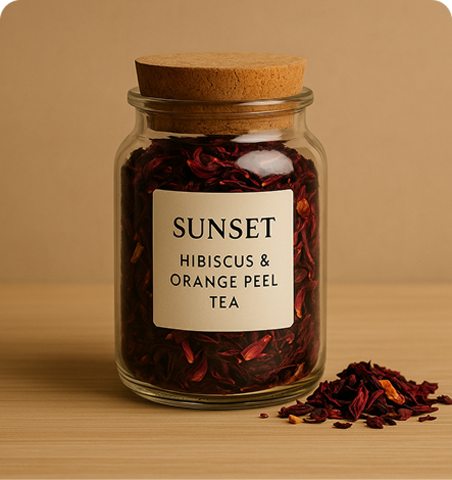
En livlig urtete med tørrede hibiscusblomster og sprøde appelsinskal,
der sammen skaber en frisk, frugtagtig og let syrlig drik.
En livlig urtete med tørrede hibiscusblomster og sprøde appelsinskal,
der sammen skaber en frisk, frugtagtig og let syrlig drik.
Bryg 1–2 tsk. i 200 ml varmt vand i 5–8 minutter for at frigive de dybe røde farvestoffer og den intense citrusaroma.
Nyd den varm eller afkølet som iste på solskinsdage.
Sunset Hibiscus & Appelsinskal
89 kr.
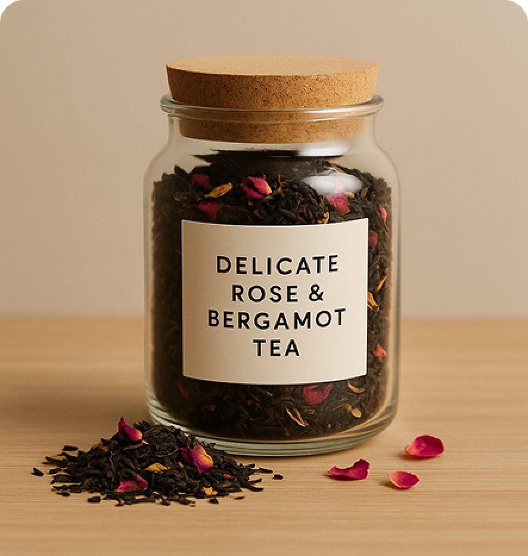
En elegant sort te blendet med sarte kronblade af rosa roser og forfriskende bergamotskal.
En elegant sort te blendet med sarte kronblade af rosa roser og forfriskende bergamotskal.
Duftende aromaer af blomster og citrus forenes i koppen, mens teen byder på en let, blomstret sødme og en diskret frisk eftersmag.
Bryg 1–2 tsk. i 200 ml varmt vand (90 °C) i 3–5 minutter.
Delicate Rose & Bergamot Tea
89 kr.
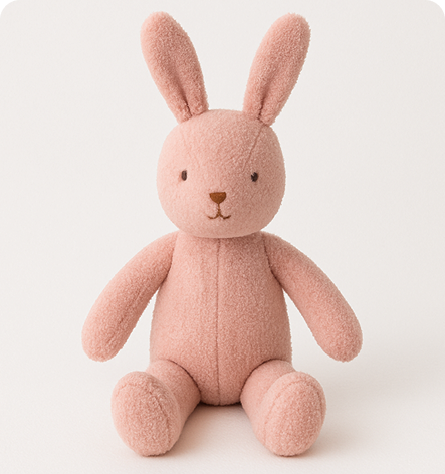
En sød, håndsyet kaninbamse i blød, økologisk bomuld med fyld af allergivenligt polyester.
En sød, håndsyet kaninbamse i blød, økologisk bomuld med fyld af allergivenligt polyester.
Den fine, støvede rosa nuance og det enkle design gør den til et trygt krammevenn for små hænder
– perfekt til leg, puttetid eller som en rolig ven på børneværelset. Maskinvaskbar ved 30 °C.
Lyserød kanin i Økologisk Bomuld
279 kr.

En charmerende, håndsyet kaninbamse i blødt, økologisk bomuld med allergivenligt polyesterfyld. Den diskrete grå nuance og det enkle, tidløse design gør den til en tryg lege- og putteven, der passer ind på ethvert børneværelse. Maskinvaskbar ved 30 °C for nem rengøring.
Grå kanin i Økologisk Bomuld
279 kr.
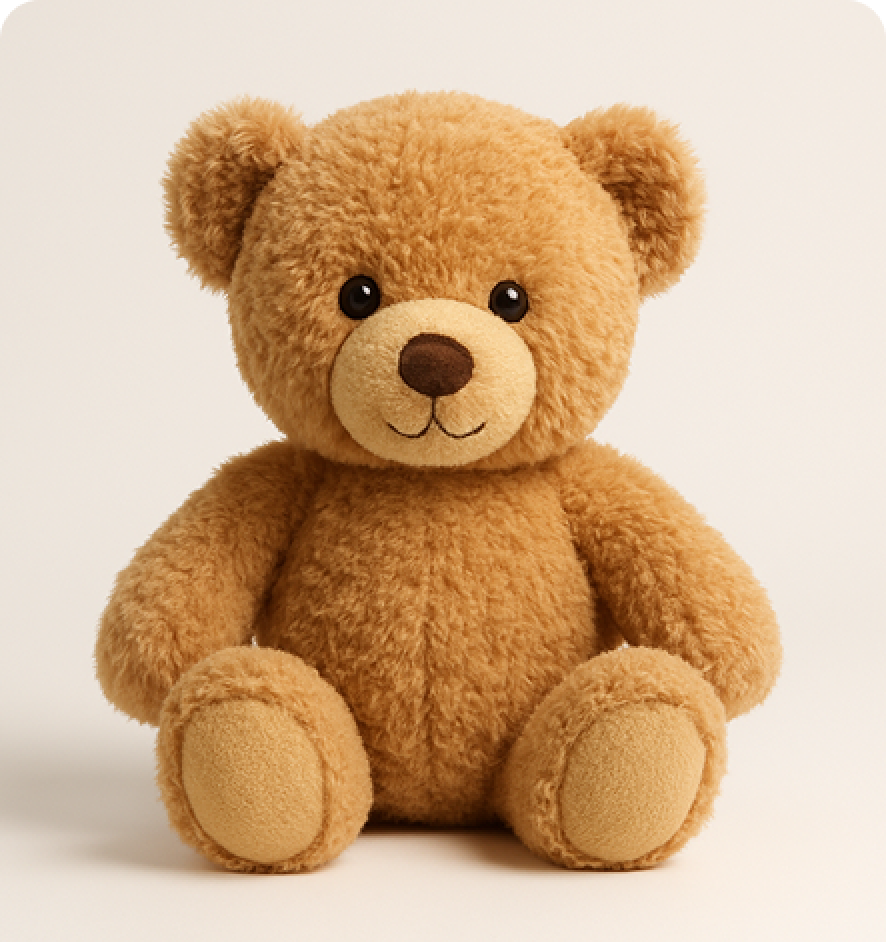
n klassisk, håndsyet bamse i ekstra blødt,
fleecet materiale med fyld af allergivenligt polyester.
n klassisk, håndsyet bamse i ekstra blødt,
fleecet materiale med fyld af allergivenligt polyester.
Med rund snude, venlige sort plastikøjne og bløde arme og ben er den perfekt til kram og hyggestunder.
Måler ca. 30 cm fra fod til øre og tåler skånsom maskinvask ved 30 °C.
Blød Bamseven
199 kr.
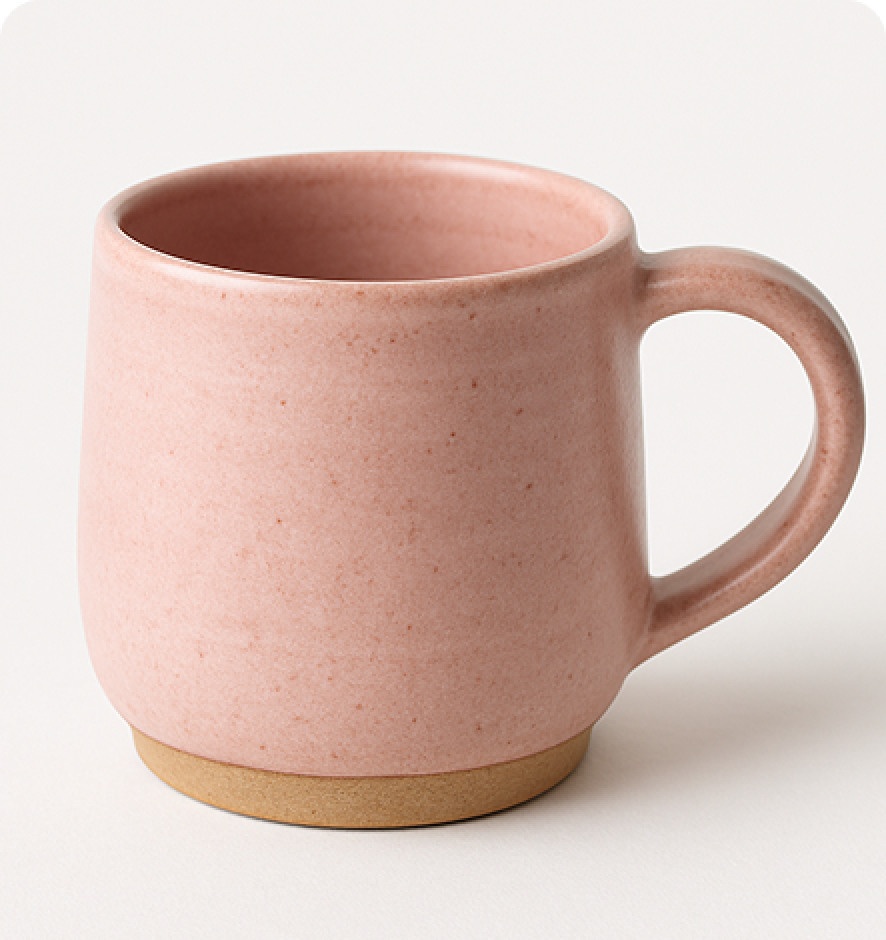
Et smukt, hånddrejet keramikkrus med blød, rosa glasur og let struktureret overflade.
Et smukt, hånddrejet keramikkrus med blød, rosa glasur og let struktureret overflade.
Det robuste design rummer ca. 300 ml – perfekt til din morgenkaffe eller aften-te.
Krusets bredfod giver stabilitet, og den bløde hank sikrer et behageligt greb.
Tåler opvaskemaskine og mikrobølgeovn.
Rosa Keramikkrus
168 kr.

Et unikt, håndlavet krus med en smuk turkis glasur, der drypper ned over en naturlig, spraglet stentøjsbund.
Kruset rummer ca. 300 ml og kombinerer kunsthåndværk med funktionalitet – perfekt til både kaffe, te eller kakao.
Tåler opvaskemaskine og mikroovn.
Dråbeglasur Keramikkrus
168 kr.
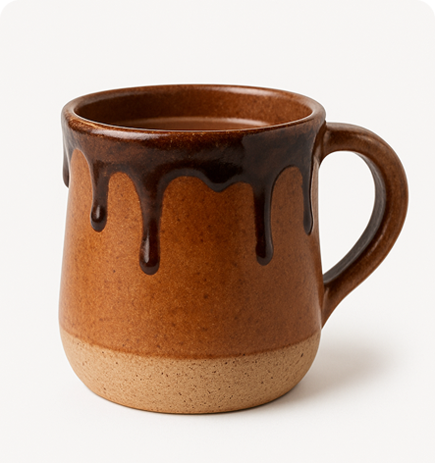
Et håndlavet stentøjskrus med varm, brun glasur og mørkebrune dryp, der skaber et unikt, kunstnerisk udtryk.
Et håndlavet stentøjskrus med varm, brun glasur og mørkebrune dryp, der skaber et unikt, kunstnerisk udtryk.
Rummer ca. 300 ml – ideelt til kaffe, te eller kakao.
Kruset kombinerer soliditet med æstetisk charme og tåler både opvaskemaskine og mikrobølgeovn.
Rustikt Drypglasur Keramikkrus
168 kr.
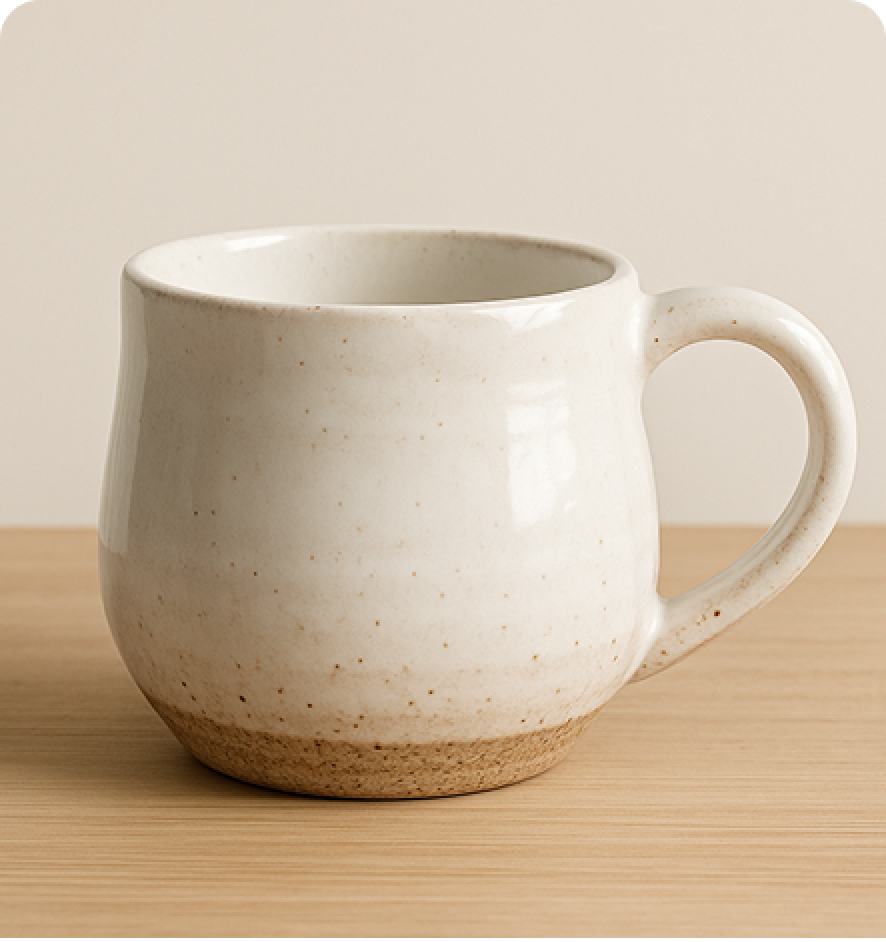
Et håndlavet krus i robust stentøj med naturlig, off-white glasur og fine, brune spangles.
Et håndlavet krus i robust stentøj med naturlig, off-white glasur og fine, brune spangles.
Den bløde, let buede form rummer ca. 300 ml – perfekt til både kaffe og te.
Kruset kombinerer et tidløst, nordisk look med praktisk funktionalitet og tåler både opvaskemaskine og mikrobølgeovn.
Specklet Keramikkrus
168 kr.
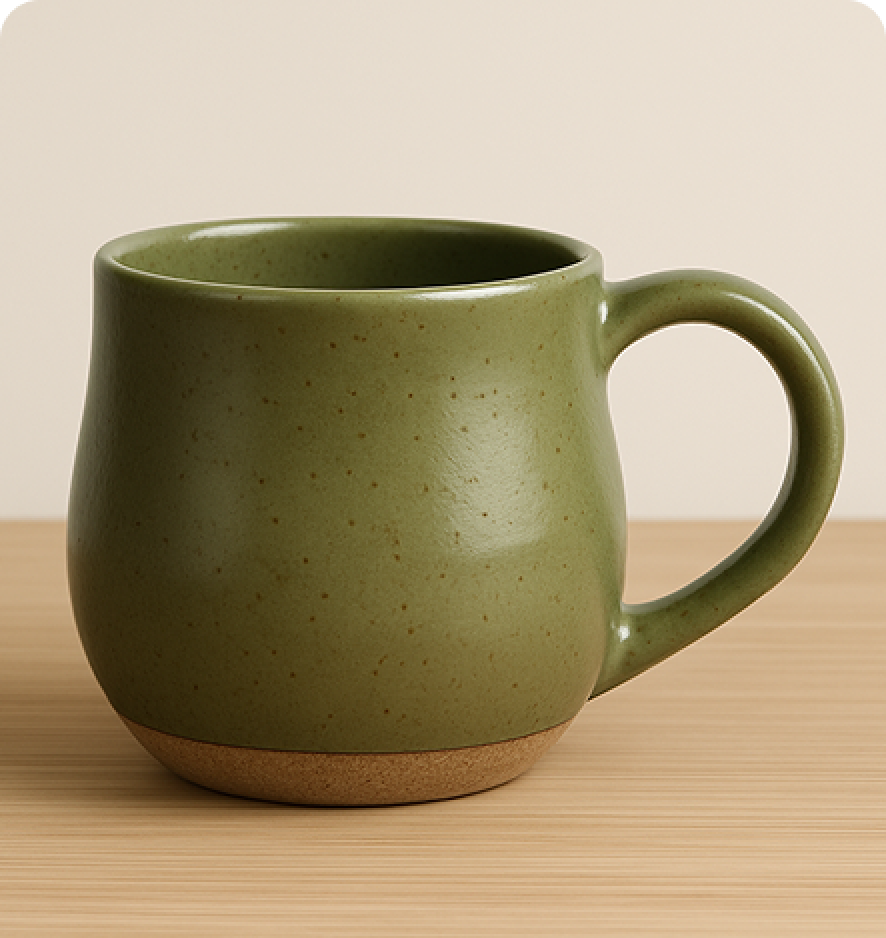
Et hånddrejet krus i robust stentøj med en dyb, olivengrøn glasur og en rå, uglaseret bund, der fremhæver det naturlige materiale.
Et hånddrejet krus i robust stentøj med en dyb, olivengrøn glasur og en rå, uglaseret bund, der fremhæver det naturlige materiale.
Kruset rummer ca. 300 ml og har en behagelig, rund form og en solid hank
– perfekt til kaffe, te eller kakao. Tåler opvaskemaskine og mikrobølgeovn.
Smaragdgrønt Keramikkrus
168 kr.
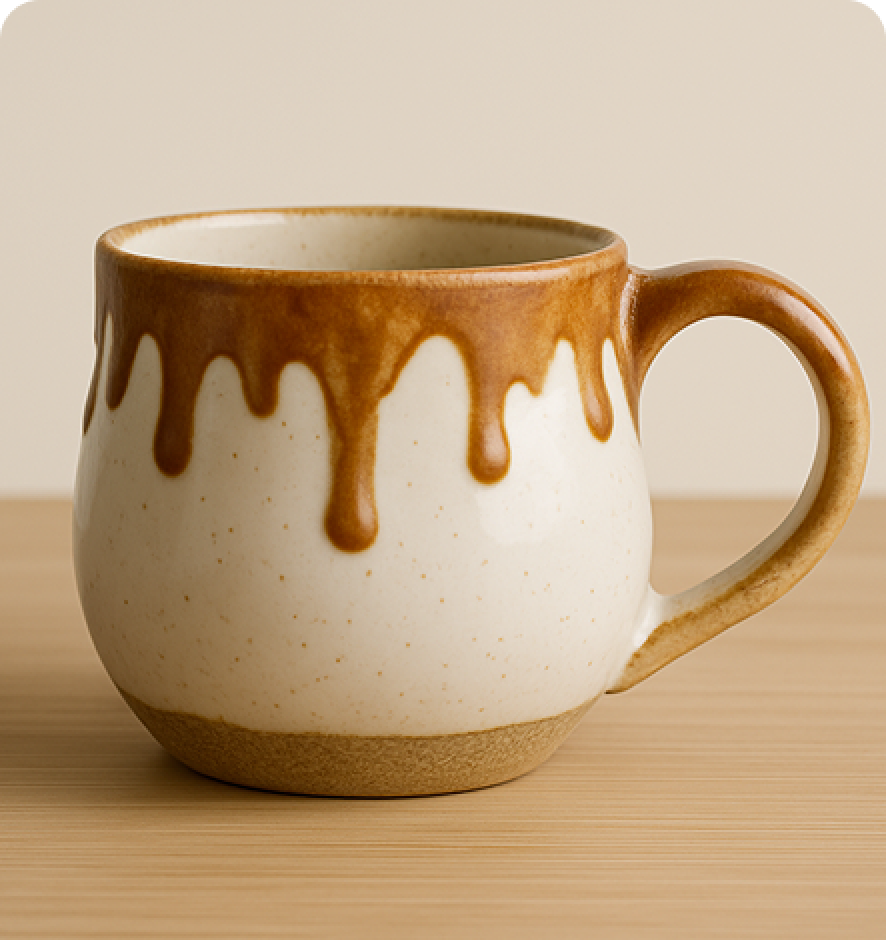
Et håndlavet krus i stentøj med en naturlig off-white bundglasur og varm, brændt kastanjebrun drip-effekt, der drypper elegant ned ad krusets kant.
Et håndlavet krus i stentøj med en naturlig off-white bundglasur og varm, brændt kastanjebrun drip-effekt, der drypper elegant ned ad krusets kant.
Formen er rund og indbydende med kapacitet til ca. 300 ml
– ideel til kaffe, te eller varm kakao. Tåler opvaskemaskine og mikrobølgeovn.
Drypglasur Keramikkrus
168 kr.